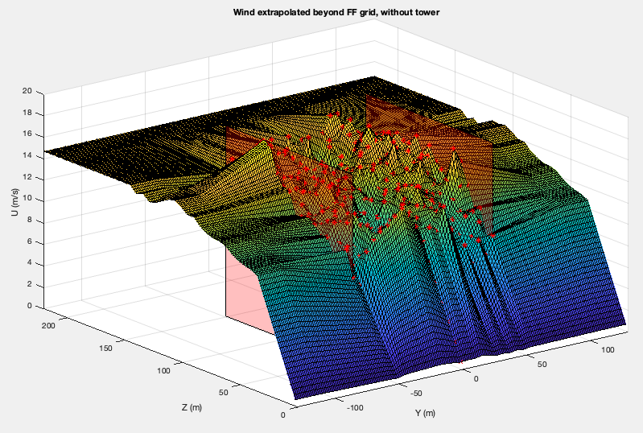
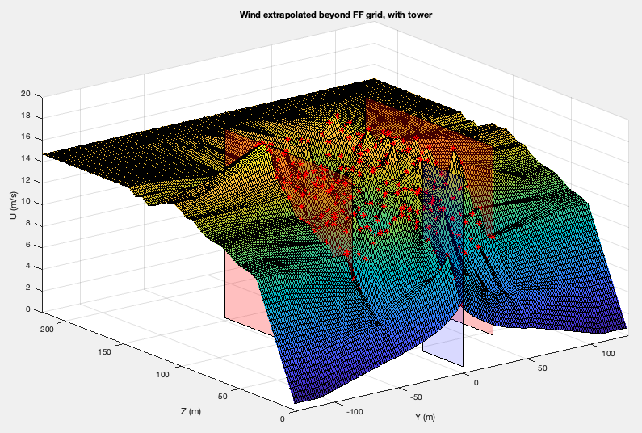

4.13.1. InflowWind 드라이버
예제 입력 파일은 다음에 포함되어 있습니다. 섹션 4.13.6 InflowWind 드라이버용.
명령줄 구문:
InflowWind_Driver <filename> [options]
where: <filename> -- Name of driver input file to use
options: /ifw -- treat <filename> as name of InflowWind input file (no driver input file)
The following options will override values in the driver input file:
/DT[#] -- timestep
/TStart[#] -- start time
/TSteps[#] -- number of timesteps
/xrange[#:#] -- range of x (#'s are reals)
/yrange[#:#] -- range of y
/zrange[#:#] -- range in z (ground = 0.0)
/Dx[#] -- spacing in x
/Dy[#] -- spacing in y
/Dz[#] -- spacing in z
/points[FILE] -- calculates at x,y,z coordinates specified in a white space delimited FILE
/v -- verbose output
/vv -- very verbose output
/hawc -- convert wind file specified in InflowWind to HAWC format
/bladed -- convert wind file specified in InflowWind to Bladed format
/vtk -- convert wind file specified in InflowWind to VTK format
/accel -- output acceleration when processing a points file
/BoxExceedAllow -- set flag to extrapolate values of points outside FF wind box
/help -- print this help menu and exit
Notes:
- Unspecified ranges and resolutions default to what is in the file.
- If no XRange is specified, assumed to be only at X=0
- Options are not case sensitive.
해당 InflowWind 매뉴얼 에는 읽을 수 있는 파일 형식에 대한 설명이 포함되어 있습니다.
4.13.1.1. InflowWind 입력 파일 지정
InflowWind 드라이버 입력 파일에는 InflowWind 입력 파일이 그 안에 지정되어야 합니다. InflowWind 입력 파일의 예를 참조하세요. 섹션 4.13.6 InflowWind 드라이버용.
InflowWind 입력 파일 내에서 지정되는 바람 파일이 Bladed 기본 형식(WindType = 7)도 참조하세요.
섹션 4.13.2.1.
4.13.1.2. Wind 파일 출력 형식
InflowWind 드라이버는 입력 바람 파일에서 읽은 바람 데이터를 다양한 형식의 바람 파일에 쓸 수 있습니다.
4.13.1.2.1. HAWC2
이 형식은 다음 파일을 생성합니다.
3개의 바이너리 파일(각 구성 요소당 하나씩):
<RootName>-HAWC.u,<RootName>-HAWC.v및 이 플래그 값 아래에<RootName>-HAWC.wHAWC2 입력 파일 스타일의 텍스트 요약 파일:
<RootName>-HAWC.sum
변환 스크립트에서 u 구성 요소는 각 높이에서 (대략) 평균이 제거됩니다. 제거된 평균값은 텍스트 요약 파일에 설명으로 표시됩니다. 난류의 크기는 조정되지 않으므로 원본 파일과 동일한 크기로 조정됩니다.
4.13.1.2.2. 블레이드
이 형식은 압축된 바이너리 파일과 텍스트 요약 파일을 생성합니다.
이 출력 형식은 TurbSim이 생성하는 Bladed 스타일 형식입니다. 즉, 가위가 포함되어 있습니다. 파일의 .
4.13.1.2.3. VTK
이 형식은 다음과 같은 하위 디렉터리에 파일을 생성합니다. vtk. 전체 필드 데이터 구조에는 매번 하나의 vtk 파일이 있으며 전체 Y-Z 그리드가 각 파일에 인쇄됩니다. 이 형식은 ParaView와 같은 뷰어를 사용하여 바람장을 시각화하는 데 사용할 수 있습니다.
4.13.1.2.4. 균일풍
이 형식은 균일한 바람 형식의 텍스트 파일을 생성합니다. 이 형식으로 변환하면 한 지점에서만 풍속과 방향을 지정하고 전단력을 거듭제곱 지수로 근사화하기 때문에 일반적으로 파일의 정보가 손실됩니다.
4.13.1.3. 균일풍을 전체장풍 형식으로 변환
균일풍 파일에서 전체 필드 바람 형식으로 변환할 때 다음 가정이 사용됩니다. - 이류 속도는 균일풍 파일의 시간 평균 수평 풍속입니다(돌풍 속도는 포함되지 않음). - 출력 파일에 사용되는 상수 시간 단계는 허브 높이 파일에 있는 두 항목 간의 가장 작은 차이입니다. - 균일풍 파일의 최대 시간이 FF 바이너리 파일의 최대 시간으로 사용됩니다. - 그리드는 가로(Y), 가로(Z) 방향으로 5m 해상도로 생성됩니다. - 그리드의 크기는 다음을 기준으로 합니다.
InflowWind 입력 파일의 RefLength 매개변수입니다. 변환기는 그리드 너비에 약 10%를 추가하며 정확한 크기는 원하는 그리드 해상도를 달성하여 결정됩니다. 그리드는 측면 방향의 중심에 있습니다. 위쪽으로 수직으로 뻗어있습니다 RefHt 는 그리드 폭과 동일한 거리만큼, 아래로 확장됩니다. RefHt 를 지면(또는 지면의 한 그리드 지점 내)에 연결합니다.
균일한 바람 파일과 전체 필드 바람 파일 사이에는 그리드 너비의 절반 거리를 이동하는 데 걸리는 시간과 같은 잠재적인 시간 이동이 있습니다. 결과 전체 필드 파일을 사용할 때 공탄성 코드가 이를 주기적으로 처리하지 않도록 주의해야 합니다.
4.13.1.4. 전체 필드 바람 형식에서 균일 바람 형식으로 변환
전체 필드 바람 형식에서 균일 바람 파일로 변환할 때 다음 가정이 사용됩니다.
돌풍속도, 수평전단, 수직선형전단은 모두 0이다.
균일풍 기준 높이는 전체 필드 그리드 지점에 있습니다.
상향류는 기준점에서의 평균 상향류 값을 사용하여 계산됩니다.
평균 풍향과 상승류는 균일풍 파일에 속도를 쓰기 전에 참조 그리드 점에서 제거됩니다.
파일의 풍향은 평균 풍향과 순간 U 및 V 바람 성분 사이에서 계산된 순간 방향의 합입니다.
멱법칙 지수는 다음 중 하나입니다.
InflowWind에 지정된 멱법칙 지수(기본 블레이드 또는 HAWC2 파일을 사용하여 난류에 추가하기 위해 멱법칙 바람 프로필을 사용하는 경우) 또는
두 지점, 즉 기준(허브) 높이와 그리드의 가장 높은 높이의 평균 풍속을 사용하여 계산됩니다.
4.13.1.5. 가속 플래그
MHK, 수중, 터빈의 해석을 지원하기 위해 InflowWind에 유동장의 가속도를 계산하는 기능이 추가되었습니다. 로터와 상호 작용하는 유체의 유체 관성 효과를 계산하려면 가속이 필요합니다. 가속도 계산은 균일/정상 바람 및 그리드 기반 바람 프로필(Turbsim, HAWC 및 Bladed 파일)에 대해 지원됩니다. 이 플래그를 활성화하면 드라이버가 동일한 지점의 속도 외에도 Points 파일에 정의된 지점에 대한 유동장 가속도를 출력하게 됩니다.
4.13.1.6. BoxExceedAllow 플래그
일부 요청 지점이 전체 필드 윈드 그리드 외부에 놓이도록 허용하는 기능이 InflowWind에 추가되었습니다. 이를 통해 평균 수준에 접근하는 그리드 너머의 값을 지속적으로 추정할 수 있습니다.
4.13.1.6.1. 목적
InflowWind가 OpenFAST에 결합된 경우 AeroDyn 15 및 LidarSim 모듈의 OLAF(자유 와류 후류 모듈)에 해당하는 바람 지점이 전체 필드 바람 데이터 외부에 있을 수 있습니다. 다른 바람 데이터 포인트는 그리드 외부에 있을 수 없습니다(AeroDyn 블레이드는 바람 상자 내에 있어야 함). OLAF의 후류는 시간이 지남에 따라 전체 필드 바람 상자 밖으로 벗어날 수 있으며, 이 경우 보고된 바람 값의 부정확성이 터빈에 거의 또는 전혀 영향을 미치지 않도록 터빈에서 충분히 멀리 떨어져 있어야 합니다. 여기에 사용된 방법은 바람 격자 경계의 불연속성으로 인한 흐름 역전이나 기타 이상한 현상 없이 후류가 계속 진화할 수 있도록 해야 합니다. 그러나 사용된 근사치의 영향을 제한하기 위해 후류는 터빈에서 멀리 떨어질 때까지 상자 밖으로 나가도록 허용되어서는 안 됩니다.
다른 사용 사례는 LidarSim이 감지 빔이 주기적으로 윈드 박스를 빠져나가는 요잉 또는 플로팅 터빈과 같이 윈드 박스 외부에 있을 수 있는 터빈에서 멀리 떨어진 데이터를 요청하는 경우입니다.
4.13.1.6.2. 방법
초기화 중에 요청된 위치 배열의 포인트가 이 인덱스에서 시작하는 전체 필드 풍력 및 타워 그리드 외부에 놓일 수 있도록 IfW에 지시하기 위해 플래그 및 해당 인덱스가 전달됩니다. 그런 다음 이러한 지점의 값은 다음과 같이 전체 필드 바람의 데이터를 사용하여 추정됩니다.
각 시간 단계에서 각 Z 높이의 평균 바람 값은 초기화 중에 계산되고 저장됩니다(Y 차원 전체에 걸쳐 평균).
전체 필드 윈드 그리드 위의 바람은 그리드 상단의 값과 그리드 상단의 평균 사이에 선형으로 보간됩니다. 이 선형 보간 영역은 그리드 상단에서 그리드 상단 + 그리드 높이의 절반(
FFZHWid). 그 이상의 값은 일정하게 유지됩니다.+/-Y 그리드 가장자리를 벗어난 값은 그리드 가장자리의 값과 그리드의 해당 Z 고도에 대한 평균 사이에 선형으로 보간됩니다. 보간 영역은 그리드 가장자리와 Y를 따라 그리드 너비의 절반 사이에 있습니다.
+/-2*FFYHWid.타워 데이터가 없는 경우 그리드 아래 값은 그리드 하단과 지면의 0 사이에 선형 보간됩니다.
타워 데이터가 있는 경우 그리드 아래의 포인트가 타워와 그리드 및 지면 사이에 보간됩니다(0 값은
+/-2*FFYHWid). 그런 다음 그리드 가장자리를 넘어선 선형 보간이 사용됩니다.
4.13.1.6.3. 드라이버로 테스트하기
이 기능을 테스트하기 위해 드라이버는 플래그를 수락합니다. BoxExceedAllow 는 InflowWind에 모든 윈드그리드 지점이 그리드 가장자리를 넘어갈 수 있음을 알립니다. 이를 사용하려면 해당 InflowWind 입력 파일에서 참조하는 바람 파일의 전체 필드 그리드보다 큰 출력 바람 그리드로 드라이버 입력 파일을 설정하십시오. 그런 다음 다음 명령을 사용할 수 있습니다(Linux 구문, Windows는 약간 다름).
> inflowwind_driver -BoxExceedAllow MyDriverFile.inp
시간 T에서 결과 윈드 그리드 출력 파일의 단일 YZ 평면에 대해 외삽된 데이터 포인트에 대한 결과를 플롯할 수 있으며 다음 플롯과 유사한 특성을 표시해야 합니다.


그림 4.51 타워 데이터가 없을 때 전체 필드 풍력 그리드를 넘어서는 풍력 값의 추정입니다. 반투명 빨간색 평면은 전체 필드 윈드 그리드의 가장자리를 나타내고 빨간색 점은 이 예의 경우 윈드 그리드 데이터의 위치를 나타냅니다. 표면에 표시된 다른 모든 점은 보간/외삽됩니다.


그림 4.52 타워 데이터가 있을 때 전체 필드 풍력 그리드를 넘어서는 풍력 값의 추정입니다. 반투명 빨간색 평면은 전체 필드 풍력 그리드의 가장자리를 나타내고 파란색 반투명 평면은 타워 그리드를 나타내며 빨간색 점은 풍력 그리드와 타워의 데이터 포인트를 나타냅니다. 표면에 표시된 다른 모든 점은 보간/외삽됩니다.